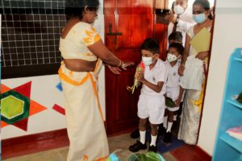

Primary SectionWhen the school was founded, the primary section of the school had started with a few students. Currently the primary section of the school has approximately 400 students and 42 teachers. With the aim of producing a well-rounded and excellent future generation, the school's primary section consists of an English department and courses covering the fields of environment, aesthetics and sports and programs aimed at Grade 5 scholarship. A group of very talented children are enrolled there. |
LATES NEWS New student for Grade One  |
|---|


© sinc 1895
Creat by UWU/ICT/20/Gruap No:07